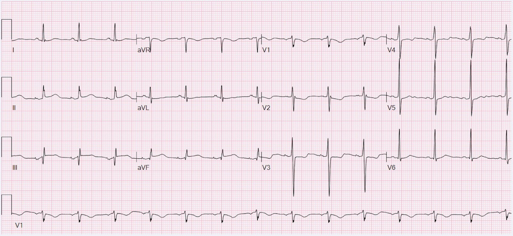
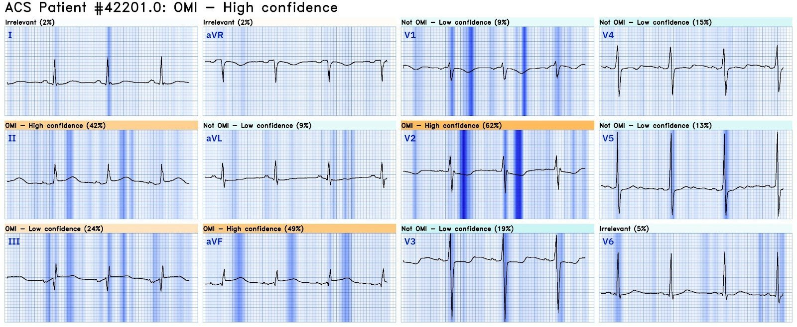
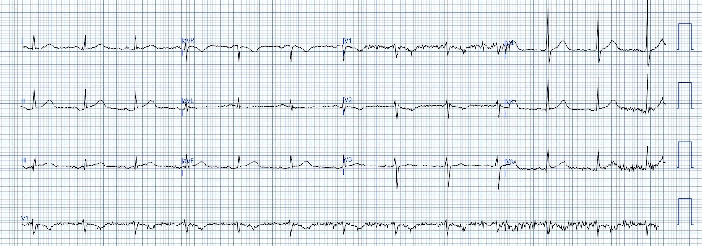
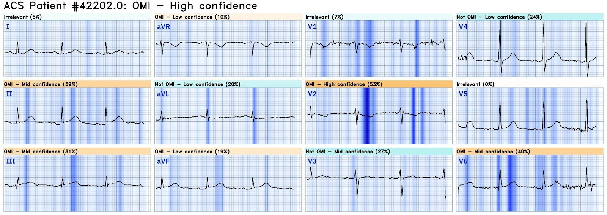
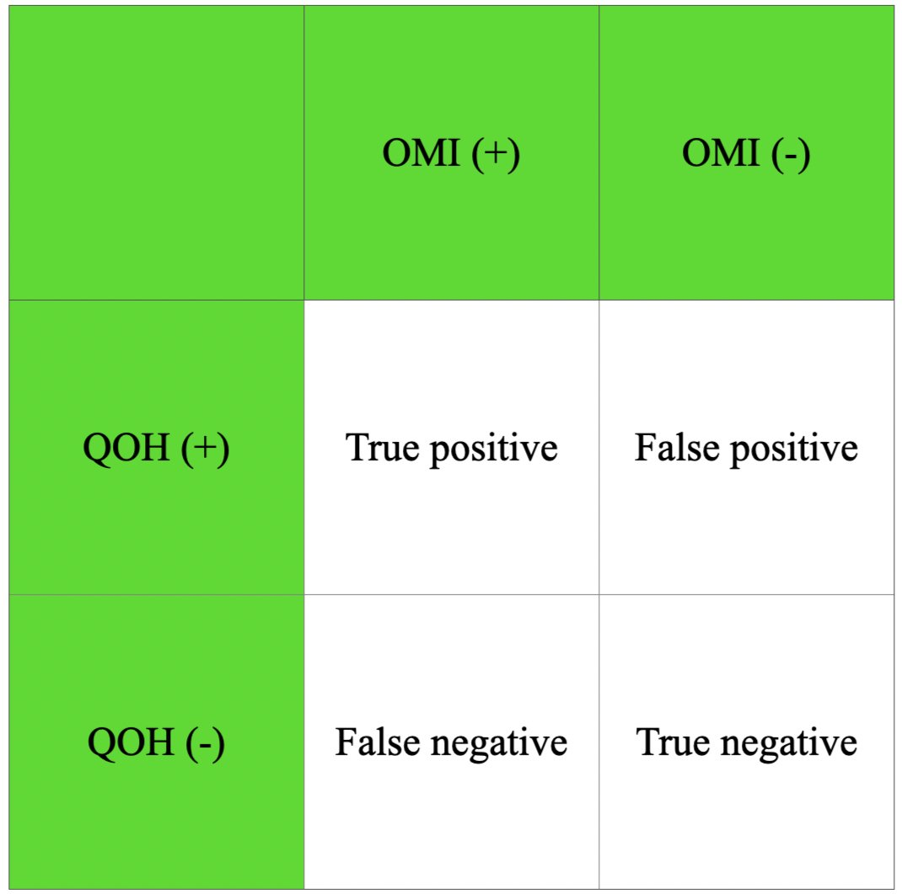
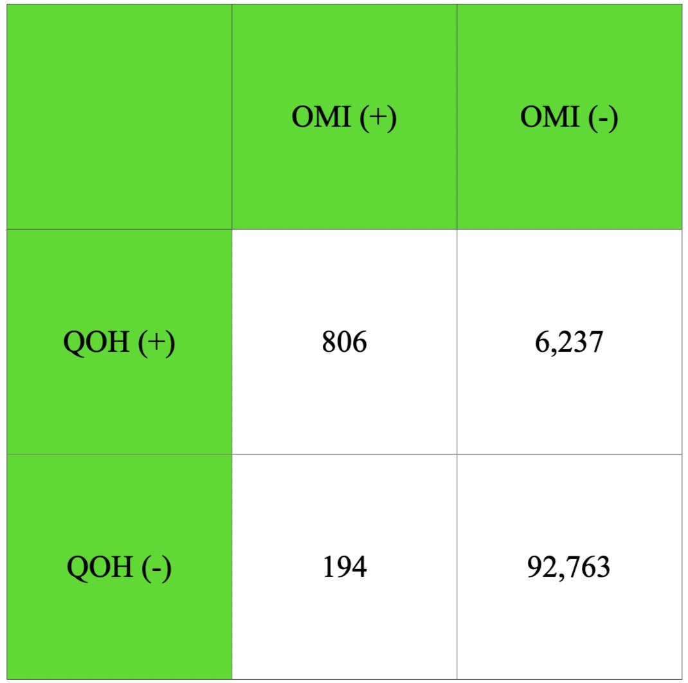

02/07/2024 — Điện tâm đồ đáng lo ngại từ bệnh nhân ở buồng chấn thương số 2. Kích hoạt phòng thông tim?
Bản dịch tiếng Việt của bài "Concerning ECG from the patient in trauma bay 2. Activate the Cath Lab?" – Dr. Smith’s ECG Blog. Giữ nguyên toàn bộ 7 hình ảnh của bản gốc.
Tác giả: Willy Frick
Bạn đang ngồi ở bàn làm việc, cố hoàn tất hồ sơ bệnh án thì một điều dưỡng đưa cho bạn điện tâm đồ sau đây để đọc.


Bạn nghĩ sao?
Đây là kết quả đọc của Queen of Hearts kèm phần giải thích (explainability):


Cô ấy kết luận OMI với độ tin cậy cao. Cô ấy đặc biệt lo ngại về sóng T tối cấp (HATW) ở thành dưới, có vẻ lan ra thành sau, gợi ý bởi ST chênh xuống (STD) tối đa ở V2.
Phiên bản 2 của Queen of Hearts, hiện chưa công bố rộng rãi, đã kết luận đây là dương tính giả (mà không hề biết chút bệnh sử nào!)
Click here to sign up for Queen of Hearts Access (Bấm vào đây để đăng ký quyền truy cập Queen of Hearts)
Tôi gửi điện tâm đồ này cho BS. Meyers mà không kèm bối cảnh gì, và anh ấy trả lời: “Với tôi có gì đó hơi lạ, nhưng tôi sẽ cứ coi là OMI nếu bệnh nhân có triệu chứng với xác suất tiền nghiệm hội chứng vành cấp (ACS) hợp lý, nhất là đau ngực.”
Smith: điện tâm đồ này không điển hình cho OMI, nhưng như Pendell nói, với xác suất tiền nghiệm cao thì bạn sẽ phải giả định là OMI. Nhưng theo con mắt của tôi, nó không đủ để chẩn đoán OMI. Queen phiên bản 1 có thể sai ở đây. Có lẽ chúng ta có thể xin kết quả đọc từ Phiên bản 2.
Mười phút sau, điện tâm đồ được ghi lại.


Một lần nữa, kết quả đọc của Queen of Hearts kèm phần giải thích:


Cô ấy lại kết luận OMI với độ tin cậy cao. Lần này, cô ấy thấy sóng T tối cấp ở V6. Việc một RCA lớn, ưu thế, cấp máu cho thành bên là thường gặp. Ngay sau khi ghi điện tâm đồ này, phòng thông tim (cath lab) được kích hoạt và bệnh nhân được chụp mạch vành cấp cứu. Họ đã tìm thấy gì?
Bệnh nhân có động mạch vành bình thường.
Ngoài ra, siêu âm tim của bà cũng bình thường. Điều gì giải thích chuyện này? Câu trả lời là điều này có thể đoán trước được dựa trên bệnh sử. Bệnh nhân là một phụ nữ trung niên bị động kinh và không có tiền sử bệnh lý nào khác. Bà có một ngày hoàn toàn bình thường, không than phiền gì và đang chơi bài cùng gia đình thì lên cơn co giật co cứng-co giật toàn thể kéo dài 30 phút, cuối cùng cắt được bằng midazolam 10 mg tiêm bắp do đội cấp cứu ngoài viện (EMS) thực hiện. Khi đến khoa cấp cứu (ED), nhiệt độ của bà là 103.2 °F, các dấu hiệu sinh tồn khác trong giới hạn bình thường. Các thay đổi điện tâm đồ của bà có thể là sẵn có từ trước (không có điện tâm đồ cũ để so sánh), hoặc có thể liên quan đến cơn co giật kéo dài hay thuốc chống động kinh.
Bây giờ, hãy quên hết các điện tâm đồ trong bài này cùng với kết quả đọc của Queen. Hãy tưởng tượng tất cả những gì bạn biết về bệnh nhân là đoạn văn vừa rồi. Dựa trên đó, bạn sẽ nói khả năng OMI là bao nhiêu? Bạn sẽ phải nói là cực kỳ thấp. Nếu bạn gặp 100 bệnh nhân tương tự (tức là vốn khỏe mạnh, đến viện vì co giật và không có triệu chứng nào khác), sẽ thật đáng ngạc nhiên nếu dù chỉ 1 người trong số đó bị OMI, dựa trên bệnh sử.
Nói cách khác, xác suất tiền nghiệm OMI của bà tối đa chỉ là 1%. Vậy việc Queen of Hearts thấy OMI với độ tin cậy cao có nghĩa là gì? Có thể bạn đang tự hỏi: “Chẳng phải độ nhạy và độ đặc hiệu của Queen đặc biệt tốt sao?” Đúng vậy! Chúng thật phi thường. Trong nghiên cứu lớn nhất đã công bố cho đến nay, độ nhạy của cô ấy là 80.6% và độ đặc hiệu là 93.7%. Diện tích dưới đường cong ROC (receiver operating characteristic) của cô ấy là 0.938, một con số xuất sắc.
Thế nhưng, tất cả những điều đó có thể bị vô hiệu hóa khi áp dụng sai một xét nghiệm đặc biệt tốt cho sai quần thể bệnh nhân. Hãy nhớ khung sau đây.


Giả sử chúng ta có 100,000 bệnh nhân, và 1% trong số họ bị OMI. Trước khi đọc tiếp, hãy thử điền các con số vào bảng ở trên với các giá trị sau — 100,000 bệnh nhân, tỷ lệ mắc OMI 1%, độ nhạy 80.6% và độ đặc hiệu 93.7%.
Nếu tỷ lệ mắc là 1%, nghĩa là 1,000 bệnh nhân sẽ bị OMI và 99,000 bệnh nhân sẽ không bị OMI. Nếu độ nhạy của xét nghiệm (QOH) là 80.6%, thì 80.6% trong 1,000 bệnh nhân bị OMI sẽ có kết quả dương tính (dương tính thật), và do đó 19.4% trong 1,000 bệnh nhân bị OMI sẽ có kết quả âm tính (âm tính giả).
Tương tự, nếu độ đặc hiệu là 93.7%, thì 93.7% số bệnh nhân không bị OMI sẽ có kết quả âm tính (âm tính thật), và 6.3% sẽ có kết quả dương tính (dương tính giả). Điều này được trình bày dưới đây:


Lưu ý rằng cột giữa (dương tính thật và âm tính giả) có tổng là 1000, và cột bên phải (âm tính thật và dương tính giả) có tổng là 99,000. Vậy, quay lại câu hỏi: trong bối cảnh này, một điện tâm đồ dương tính theo QOH có nghĩa là gì?
Điều bạn muốn biết là giá trị tiên đoán dương của xét nghiệm. Nó cho bạn biết khả năng một kết quả dương tính là dương tính thật (chứ không phải dương tính giả). Hãy tự kiểm tra xem bạn có tính được con số này trước khi đọc tiếp không.
Để tính con số này, hãy chia số dương tính thật cho tổng số dương tính. Trong trường hợp này, đó là:
806/(806 + 6,237) ≈ 11%
Nói cách khác, dương tính giả có khả năng xảy ra cao hơn nhiều so với dương tính thật. Đây là lý do BS. Meyers nói “tôi sẽ cứ coi là OMI nếu bệnh nhân có triệu chứng với xác suất tiền nghiệm ACS hợp lý, nhất là đau ngực.”
Những điểm cần học:
- Điện tâm đồ là một xét nghiệm chẩn đoán, phải được diễn giải trong bối cảnh lâm sàng.
- Ước tính xác suất tiền nghiệm là một phần thiết yếu của việc chăm sóc tốt cho bệnh nhân.
- Các xét nghiệm chẩn đoán có đặc tính tuyệt vời vẫn cho kết quả kém khi được dùng sai bối cảnh.
- Queen of Hearts được huấn luyện trên các bệnh nhân đến khoa cấp cứu vì đau ngực mới khởi phát, và đó là bối cảnh mà cô ấy hoạt động tốt nhất.
Bình luận của Smith: điều ngược lại cũng đúng: nếu xác suất tiền nghiệm rất cao, một xét nghiệm âm tính có giá trị tiên đoán âm thấp.
Đây là thêm các ca liên quan đến xác suất tiền nghiệm: https://drsmithsecgblog.com/search?q=pretest+probability (tìm kiếm: xác suất tiền nghiệm)

===================================
BÌNH LUẬN CỦA TÔI, bởi KEN GRAUER, MD (2/7/2024):
===================================
Thấu hiểu khái niệm được truyền tải trong bài viết hôm nay của BS. Frick — là điều thiết yếu để đọc điện tâm đồ lâm sàng tối ưu.
- Nói gọn trong một câu — BS. Frick tổng hợp tinh hoa của định lý Bayes (Bayes’ Theorem) — điều đáng kinh ngạc là định lý này được mô tả lần đầu từ năm 1763 bởi nhà thống kê, triết gia kiêm mục sư người Anh, Thomas Bayes.
- Trong vai trò người giảng dạy chăm sóc ban đầu từ 1980-2010 — tôi thường xuyên viện dẫn định lý Bayes khi dạy về ETT (nghiệm pháp gắng sức trên thảm lăn — Exercise Treadmill Testing) cho các bác sĩ nội trú và bác sĩ lâm sàng chăm sóc ban đầu.
- Nói đơn giản, khi áp dụng cho ETT tại phòng khám — khả năng một bệnh nhân mắc bệnh mạch vành tỷ lệ thuận với tỷ lệ hiện mắc (tức là khả năng tiền nghiệm) bệnh mạch vành trong quần thể được làm xét nghiệm. Nhìn từ một góc độ khác, “Bạn không thể câu được con cá vàng nào — nếu trong ao chẳng có con cá vàng nào.”
- Áp dụng cho nghiệm pháp gắng sức tại phòng khám — Khi bệnh nhân trước mặt tôi là một nam giới trung niên hoặc lớn tuổi hơn, hút thuốc lá, có triệu chứng đau thắt ngực điển hình khi gắng sức tối thiểu, giảm khi nghỉ — tôi đã biết trước cả khi bệnh nhân đó bước lên thảm lăn rằng khả năng ETT dương tính là ít nhất 90%! Thực tế, kỳ vọng của tôi không nhằm “xác nhận” điều tôi đã biết (tức là bệnh nhân này có bệnh mạch vành) — mà nhằm ước tính mức độ nặng tương đối của bệnh (tức là ST chênh xuống dốc xuống chỉ trong vài phút sau khi bắt đầu gắng sức kèm tái hiện cơn đau thắt ngực nghĩa là cần thông tim càng sớm càng tốt).
- Ngược lại — CP (đau ngực — Chest Pain) không điển hình ở một phụ nữ trẻ hơn không có yếu tố nguy cơ đáng kể nghĩa là dù ETT cho kết quả ST chênh xuống dốc xuống — thì nhiều khả năng đây vẫn sẽ là một xét nghiệm dương tính giả.
Điều này liên quan gì đến điện tâm đồ ở khoa cấp cứu?
Về mặt thực tế — việc một bệnh nhân gọi đội cấp cứu ngoài viện (EMS) hoặc đến khoa cấp cứu vì CP mới xuất hiện tự động xếp họ vào nhóm nguy cơ cao hơn bị một biến cố tim cấp.
- Điều này không có nghĩa là mọi bệnh nhân như vậy đều đang bị OMI cấp (vì chúng ta biết là không phải vậy) — nhưng nó có nghĩa là khả năng tiền nghiệm ở một bệnh nhân gọi EMS hoặc đến khoa cấp cứu vì CP mới xuất hiện cao hơn nhiều so với khả năng tiền nghiệm OMI cấp ở một bệnh nhân được khám tại phòng khám vào ngày hôm sau.
- Làm việc trong chăm sóc ban đầu suốt 30 năm — hiếm khi chúng tôi gặp một bệnh nhân CP đến phòng khám ngay khi họ đang bị OMI cấp. Tôi tin rằng có một quá trình mang tính trực giác là tự chọn lọc — ở chỗ những bệnh nhân đến phòng khám có khả năng cao hơn nhiều là do một nguyên nhân không phải do tim gây ra triệu chứng — hoặc có lẽ là đau thắt ngực cần được đánh giá — nhưng tương đối ít khả năng họ đang trong quá trình bị OMI cấp.
ĐIỀU CỐT LÕI: Là người làm cấp cứu — đại đa số bệnh nhân chúng ta gặp, dù là gọi EMS hay tự đến khoa cấp cứu vì CP mới xuất hiện —tự động rơi vào nhóm tỷ lệ hiện mắc cao hơn, với khả năng lớn hơn là họ đang bị một biến cố cấp.
- Các chi tiết trong bệnh sử có thể làm tăng thêm nguy cơ biến cố tim cấp này — nhưng trách nhiệm rõ ràng thuộc về chúng ta là phải loại trừ chứ không phải xác định một biến cố cấp — vì bệnh nhân này đến với chúng ta vì CP mới xuất hiện.
- Tuy vậy — người phụ nữ trong ca hôm nay khác với những bệnh nhân tìm đến chúng ta vì CP mới xuất hiện — ở chỗ lý do bà đến khoa cấp cứu là để được đánh giá cơn co giật kèm sốt — khi không có đau ngực.
- Kết luận: Như bình luận của BS. Frick và BS. Meyers trong ca hôm nay — bệnh sử có tầm quan trọng then chốt để đọc điện tâm đồ lâm sàng tối ưu.
T.B. (P.S.): Dù không nhận ra là chúng ta đang dùng định lý Bayes — có rất nhiều tình huống khác trong y học cấp cứu mà chúng ta luôn áp dụng nguyên lý này!
- Ví dụ — một người 20 tuổi trước đó khỏe mạnh, có CP, troponin tăng nhẹ và thay đổi điện tâm đồ không hẳn khớp với một phân bố giải phẫu — có khả năng bị viêm cơ tim cấp cao hơn nhiều so với OMI cấp (ít “cá vàng” OMI hơn nhiều trong cái ao đó).
- Ngược lại — một bệnh nhân lớn tuổi đã biết có bệnh tim nặng, đến viện với nhịp WCT đều (nhịp nhanh QRS rộng — Wide-Complex Tachycardia), không có dấu hiệu rõ của sóng P xoang — có khả năng ~90% là VT ngay cả trước khi bạn nhìn vào điện tâm đồ (Rất nhiều “cá vàng” VT trong cái ao đó — nhưng rất ít trường hợp dẫn truyền lệch hướng).